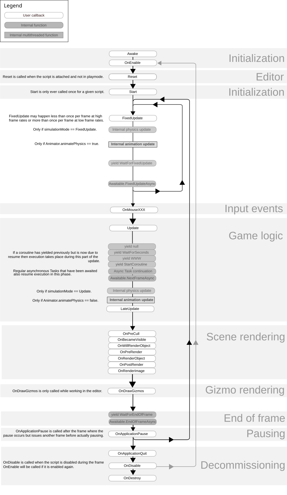
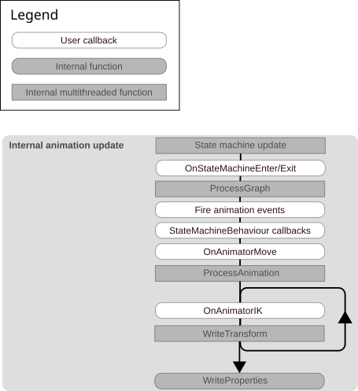

The following diagram provides a high-level overview of the execution sequence for event functions that run during the lifecycle of a MonoBehaviour script component. For readability, the scope of the chart is limited to key parts of the script lifecycle, with some extra internal subsystem updates provided for context. The full Player loop is a longer and more complex sequence of updates for specific systems and subsystems, which run one after the other in a defined default order. To retrieve the full Player loop and all of its systems, you can use the PlayerLoop API. You can also use this API to customize the Player loop sequence by removing systems, adding your own, and changing the update order.
For more information on each individual callback’s meaning and limitations, refer to the Messages section of the MonoBehaviour API reference.

The nodes labeled Internal physics update in the previous diagram represent the physics simulation. The physics simulation can occur at different stages of the MonoBehaviour execution sequence depending on the physics configuration in your project. The options are as follows:
Physics.simulationMode is set to SimulationMode.FixedUpdate or Physics2D.simulationMode is set to SimulationMode2D.FixedUpdate, the physics simulation step occurs directly after MonoBehaviour.FixedUpdate.Physics.simulationMode is set to SimulationMode.Update or Physics2D.simulationMode is set to SimulationMode2D.Update, the physics simulation step occurs directly after MonoBehaviour.Update.Physics.simulationMode is set to SimulationMode.Script or Physics2D.simulationMode is set to SimulationMode2D.Script, then you manually simulate physics from your script code, and the timing of the simulation depends on the step parameter you pass to Physics.Simulate or Physics2D.Simulate.The physics simulation step includes:
MonoBehaviour.OnTriggerEnter, MonoBehaviour.OnTriggerStay, MonoBehaviour.OnTriggerExit, MonoBehaviour.OnTriggerEnter2D, MonoBehaviour.OnTriggerStay2D, MonoBehaviour.OnTriggerExit2D
MonoBehaviour.OnCollisionEnter, MonoBehaviour.OnCollisionStay, MonoBehaviour.OnCollisionExit, MonoBehaviour.OnCollisionEnter2D, MonoBehaviour.OnCollisionStay2D, MonoBehaviour.OnCollisionExit2D
MonoBehaviour.OnJointBreak, MonoBehaviour.OnJointBreak2D
MonoBehaviour.OnParticleCollision, MonoBehaviour.OnParticleTrigger
The following diagram shows the order of execution for the regular Animation update loop, and expands the nodes labelled Internal animation update in the previous diagram:

The following Animation loop callbacks shown in the diagram are called on scripts that derive from MonoBehaviour:
Additional animation-related event functions are called on scripts that derive from StateMachineBehaviour:
StateMachineBehaviour.OnStateMachineEnterStateMachineBehaviour.OnStateMachineExitStateMachineBehaviour.OnStateEnterStateMachineBehaviour.OnStateUpdateStateMachineBehaviour.OnStateExitStateMachineBehaviour.OnStateMoveStateMachineBehaviour.OnStateIKOther animation functions shown in the diagram are internal to the animation system and are provided for context. These functions have associated Profiler markers so you can use the ProfilerA window that helps you to optimize your game. It shows how much time is spent in the various areas of your game. For example, it can report the percentage of time spent rendering, animating, or in your game logic. More info
See in Glossary to see when in the frame Unity calls them. Knowing when Unity calls these functions can help you understand exactly when the event functions you do call are executed. For a full execution order of animation functions and profiler markers, refer to Profiler markersPlaced in code to describe a CPU or GPU event that is then displayed in the Unity Profiler window. Added to Unity code by default, or you can use ProfilerMarker API to add your own custom markers. More info
See in Glossary.
Important: The Built-In Render Pipeline is deprecated and will be made obsolete in a future release.
It remains supported, including bug fixes and maintenance, through the full Unity 6.7 LTS lifecycle.
For more information on migration, refer to Migrating from the Built-In Render Pipeline to the Universal Render Pipeline and Render pipeline feature comparison.
This execution order applies for the Built-in Render Pipeline only. For details of execution order in render pipelines based on the Scriptable Render Pipeline, refer to the relevant sections of the documentation for the Universal Render Pipeline or the High Definition Render Pipeline. If you want to do work immediately prior to rendering, refer to Application.onBeforeRender.
OnPreCull: Called before the camera culls the scene. Culling determines which objects are visible to the camera. OnPreCull is called just before culling takes place.OnBecameVisible/OnBecameInvisible: Called when an object becomes visible/invisible to any camera. OnBecameInvisible is not shown in the flow chart above since an object may become invisible at any time.OnWillRenderObject: Called once for each camera if the object is visible.OnPreRender: Called before the camera starts rendering the scene.OnRenderObject: Called after all regular scene rendering is done. You can use GL class or Graphics.DrawMeshNow to draw custom geometry at this point.OnPostRender: Called after a camera finishes rendering the scene.OnRenderImage: Called after scene rendering is complete to allow post-processing of the image, see Post-processing Effects.OnGUI: Called multiple times per frame in response to GUI events. The Layout and Repaint events are processed first, followed by a Layout and keyboard/mouse event for each input event.OnDrawGizmos Used for drawing Gizmos in the scene view for visualisation purposes.
Note: OnPreCull, OnPreRender, OnPostRender, and OnRenderImage are built-in Unity event functions that are called on MonoBehaviour scripts but only if those scripts are attached to the same object as an enabled Camera component. If you want to receive the equivalent callbacks for OnPreCull, OnPreRender, and OnPostRender on a MonoBehaviour attached to a different object, you must use the equivalent delegates (note the lowercase on in the names) Camera.onPreCull, Camera.onPreRender, and Camera.onPostRender as shown in the code examples in the relevant pages of the scripting reference.
Suspended coroutines can resume at different points in the execution sequence depending on the yield instruction used. For example, coroutines that use WaitForEndOfFrame resume at the end of the frame, while those that use WaitForFixedUpdate resume at the end of the fixed update step. For more information, refer to Coroutines.
Regular .NET Tasks and asynchronous methods resume in the Update phase. Similarly to coroutines, Unity’s custom Awaitable class can resume at different points depending on the method you use when awaiting. For more information, refer to Asynchronous programming with the Awaitable class.
Note: The exact order of execution between resuming coroutines and asynchronous tasks is not guaranteed. Awaitables are grouped together and executed in the order they were awaited.
When using the Entity Component System (ECS), Unity merges ECS system group updates into the Player update loop.
You can use the Entities Systems window to view the update order of ECS system groups relative to the full Player loop. For more information, refer to Update order of systems in the Entities package documentation.
The event functions shown in the diagram are all part of the MonoBehaviour script lifecycle, but there are many other events and callbacks that Unity invokes outside of this lifecycle. For example, you can execute custom setup or cleanup code before your scripts are loaded or after they are unloaded with the code lifecycle callbacks in the Unity.Scripting.LifecycleManagement namespace. You can also execute code on entry to and exit from Play mode with the lifecycle attributes in the UnityEngine and UnityEditor.Scripting.LifecycleManagement namespaces. For more information, refer to Code reload and the code lifecycle.
In general, you can’t rely on the order in which the same event function is invoked for different GameObjects, except when the order is explicitly documented or settable.
You can’t specify the order in which an event function is called for different instances of the same MonoBehaviour script. For example, the Update function of one MonoBehaviour might be called before or after the Update function for the same MonoBehaviour on another GameObject, including its own parent or child GameObjects.
To configure the execution order between different MonoBehaviour scripts, refer to Script execution order.